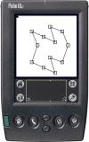
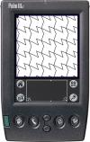
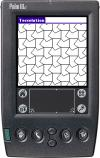
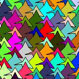
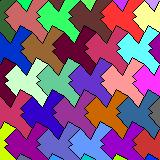

| Screen shots | How to use | License |
| Download | Supported Devices | Features |
| Bugs | The future | Links |
| Contributors | ||
| Edit the figure | Tessellate the figure | Square2 |
|  |  |  |
| Diamond | Square and Eight | Brick (fish?) |
|
 |  |
Start the program. Click New.
Choose one of the basic figures:
Click OK. Select the figure. Click Edit.
Now you can start editing the figure. Click in de middle of a line.
Hold done the pen. And move the pen. Two squares appear, and move together.
Select color from the tessellate menu. The program will tessellate the figure.
Select edit from the tessellate menu. Now you can edit the figure.
To save your figure select Done from the tessellate menu.
Tessellation for the Palm is licensed under the GNU GPL license.
It means you can use and copy the program freely,
but if you include the sourcecode (or part of it) in a program of your own,
that program *shall* be licensed under the GNU GPL 2 license too.
If you distribute the program, you have to include the source code!
The following table is a list of devices and functionality which are known to work or not to work.
| Device | Palm OS | Color | Gray | B/W |
|---|---|---|---|---|
| Palm IIIc | 3.5 | Yes | Yes | Yes |
| Palm 505 | 4.0 | Yes | Yes | Yes |
| Palm Vx | 3.5 | No | Yes | Yes |
All devices with Palm OS < 3.5 don't work.
To do:
If you have an idea for a new feature send a email to David Rasch.
But if you find a bug, send a bug report to David Rasch.
Information to include in bug report:
I would like to thank the following people: Fred, Gerald, Stefan, Bas, René and Andrew